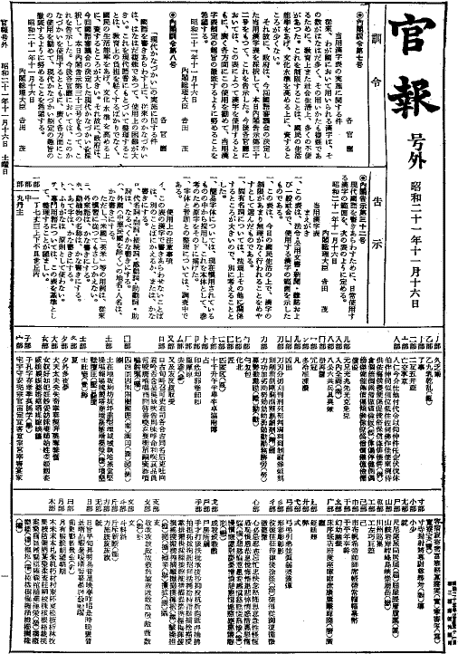
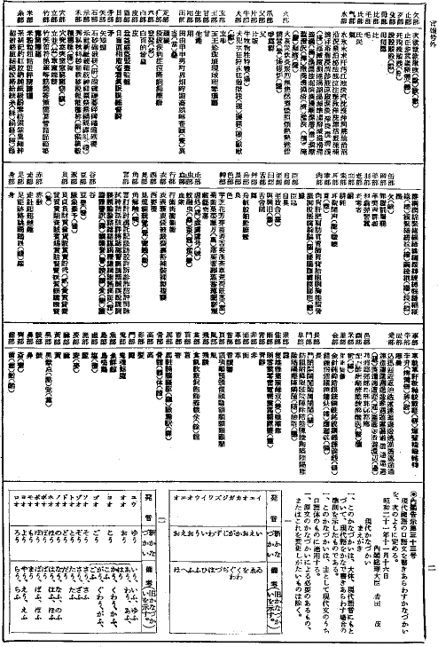

�y���p�����\�z
�t�@�C���쐬�Ғ��L
�E���p�����\���AJIS X 0213�̕�ۋK��������ăR�[�h�����܂����B
�EJIS X 0213�ŕ�ۋK���̓K�p�����O���ꂽ���̂́A�ʎ��Ƃ��Ĉ����܂����B
�E���̃t�@�C���ɂ́AJIS X 0213�Œ�`���ꂽ�����R�[�h���g�p���Ă��܂��B
�E�\���p�t�H���g�ɁAJIS X 0213�ɑΉ��������̂��w�肵�Ă��Ȃ��ꍇ�A���̋K�i�ŐV���ɒ�`���ꂽ�����́A�������\������܂���B�i�u���t�P�߁v�̑O�Ɏg���Ă���ւ̖ڋL���A�u���v�̋����Ȃǁj
�EJIS X 0213�ɑΉ������t�H���g�iKandata�j��p���č쐬����PDF�ł��A�����ɒu���Ă����܂��B�i644K�o�C�g����܂��B�j
�EJIS X 0213�Ή��t�H���g���C���X�g�[�����Ă��Ȃ��Ƃ��APDF�łł́A���ׂĂ̕����𐳂����\���ł��܂��B
�EPDF�ł��J���ɂ́AAcrobat Reader���K�v�ł��B
�E���p�����\�i���a21�N11��16�����O���t������32���j�ɂ́A���a22�N6��9������ɂ���āA10���ɑ��A����������������Ă��܂��B
�E2001�N6��22���ȑO�Ɍ��J���Ă����t�@�C���ł́A�����10���ɑ���������e�����f�ł��Ă��܂���ł������A�����F�ꂳ��i���s��w�l���Ȋw������������������Z���^�[�j�̂������āA�ȍ~�̂��̂ɂ͂����g�ݓ���邱�Ƃ��ł��܂����B
�E10���̂�����6���i������̎��̂Ŏ����A�u�J�v�u���v�u�Ӂv�u���v�u��v�u���v�j�̏C�����e�́A�u�_�E��̑����v��u�����邩�A�����Ȃ����v�ȂǁAJIS X 0213�̕�ۂ͈̔͂ɂ����܂���̂Ɣ��f���܂����B
�E�ȉ���3���ɑ�������́AJIS X 0213�̕�ۂ͈̔͂ɂ����܂�Ȃ��ƍl���܂����B
�@1��4�i6�s�@�i���j���i���j
�@1��4�i36�s�@�ā���
�@2��1�i30�s�@���m���u��v�́u�R�v���u�c�v�n����
�E2��3�i16�s�A������u�i誁j�v�̒����O���̂Ɋւ��ẮA�u�܊��v�̉��́u�H�v���u��v�ƂȂ��Ă���̂ł͂Ȃ����A���邢�́A�u�H�v�Ɓu�S�v�ɋ��܂��u���v���u���v�ƂȂ��Ă���̂ł͂Ȃ����ȂǂƑz����c��܂��Ă݂܂������A�Q�Ƃł�������̂�����ɂ���Ă��A�m�M�������Ĕ��f���������Ƃ��ł��܂���ł����B
�E����Ė{�t�@�C���̍쐬�҂́A�u�i誁j�v�̒����O���̂ɂ��ẮA�������f�𗯕ۂ��܂��B����ɂ��āA���肪�\�Ȏ������Q�Ƃł�����������܂�����A�摜�̒A�������͏����{�݂̂����������肢�\���グ�܂��B
�E�ȉ��Ɍf���铖�p�����\�t�@�C�����ł́A��ۂ͈̔͂ɂ����܂�Ȃ��Ɣ��f����3���ƁA���f�̕t���Ȃ�����1���Ɋւ��ẮA������̎��̂�Ŏ����܂��B
�E�u���v�̕��ƂȂ��Ă���Ƃ���ɂ́A�u���v��₢�܂����B
�E�u�ےO��v�̕��ƂȂ��Ă���Ƃ���ɂ́A�u���v��₢�܂����B
�E�����Ɂy�Q�l�z�Ƃ��āA���p�����\�̉摜��u���܂����B�\�̊e�i���N���b�N����ƁA�g�債���摜���J���܂��B
�E�Z���ɂ͓w�߂܂������A�ۏ͂ł��܂���B
�E�C�����ׂ��_������Ainfo@aozora.gr.jp���A���w�E�����肢�������܂��B
2001�N2��1�� �쐬�B
2001�N3��2�� �u�t�@�C���쐬�Ғ��L�v�̕����̂ݏC���B
2001�N3��19�� wakaba����̂��w�E���āAShift_JIS_X_0213�Ƃ��Ă���CHARSET���AShift_JISX0213�ɏC���B
2001�N3��28�� �u�y�Q�l�z�v�Ƃ��āA���p�����\���X�L���j���O�����摜��t���B
2001�N6��22�� �����F�ꂳ��̂��w�E���āA���a22�N6��9������Ɏ�����Ă����������e�f�B�i�Ȃ��A�u�i���j���i���j�v�Ɋւ��ẮA�]���̃t�@�C���ł��q����ār�������Ă��܂��Ă��܂����B�j
��
�Z���t�P�ߑ掵��
�@�@�@�@�@�@�@�@�@�@�@�@�@�@�@�e�@���@�K
�@�@�@���p�D���\�̎��{�Ɋւ��錏
�@�n�ҁA�킪���ɂ����ėp�������D���́A���̐����͂Ȃ͂������A���̗p����������趂ł��邽�߂ɁA�����܂����R�����A�����̕s�ւ������B����𐧌����邱�Ƃ́A�����̐����\���������A�������������߂��ɁA������Ƃ��낪�����Ȃ��B
�@����̂ɁA���{�́A����R�c��̌��肵�����p�D���\���̑����āA�{�����t������O�\�����āA��������������B����e���K�ɂ����ẮA���̕\�ɂ���D�����g�p����ƂƂ��ɁA�A���e���ʂɂ��̎g�p�����߂āA���p�D���\����̎�|�̓O�ꂷ��悤�ɓw�߂邱�Ƃ���]����B
�@���a��\��N�\�ꌎ�\�Z��
�@�@�@�@�@�@�@�@���t������b�@�g�c�@�@��
�Z���t������O�\��
�@���㚠�����������킷���߂ɁA����g�p�����D���͈̔͂��A���̕\�̂悤�ɒ�߂�B
�@���a��\��N�\�ꌎ�\�Z��
�@�@�@�@�@�@�@�@���t������b�@�g�c�@�@��
�@�@�@���p�D���\
�@�@�@�@�܂�����
��A���̕\�́A�@�߁E���p�����E�V���E趎�����ш���R��ŁA�g�p�����D���͈̔͂����������̂ł���B
��A���̕\�́A�����̚��������̏�ŁA�D���̐��������܂薳�����Ȃ��s���邱�Ƃ��߂₷�Ƃ��đI���̂ł���B
��A�ŗL�����ɂ��ẮA�@�K�セ�̑��ɊW����Ƃ��낪�傫���̂ŁA�ʂɍl���邱�ƂƂ����B
��A�ȈՎ��̂ɂ��ẮA���݊��p����Ă�����̂̒�����̗p���A�����{�̂Ƃ��āA�Q�l�̂��ߌ��������̉������B
��A���̂Ɖ��P�Ƃ̐����ɂ��ẮA�������ł���B
�@�g�p��̒��ӎ���
�@�C�A���̕\���D���ŏ�������킹�Ȃ����Ƃ́A�ʂ̂��Ƃɂ����邩�A�܂��́A���ȏ����ɂ���B
�@���A�㖼���E�����E�ڑ����E�������E�������E�����́A�Ȃ�ׂ����ȏ����ɂ���B
�@�n�A�O���i���ؖ����������j�̒n���E�l���́A���ȏ����ɂ���B
�@�@�@�������A�u�Ě��v�u�p�āv���̗p��́A�n�҂̊��K�ɜn�Ă����������Ȃ��B
�@�j�A�O�Ҍ�́A���ȏ����ɂ���B
�@�z�A���A���̖��̂́A���ȏ����ɂ���B
�@�ցA���Ď��́A���ȏ����ɂ���B
�@�m�A�ӂ肪�Ȃ́A�����Ƃ��Ďg��Ȃ��B
�@�`�A����p��ɂ��ẮA���̕\����Ƃ��āA�������邱�Ƃ��]�܂����B
�ꕔ�@�꒚����O�㉺�s�����u��
�����@��
�����@�ےO��
�����@�v�R��
�����@����������i���j
�����@����
�@��܈䘱
�����@�S������
�l���@�l�m����d���t��߈ȋ����C�镚���x�����L�f���A�ʒ�Z�����ō���g�җ᎘���ˇ���N�W���r���ېM�C�o�U���i���j�q�{�|��ؕ�l�ω��i��j�̕Β⌒�����T�����ÙB���X�������E�ǙJ�V���L�D
�X���@���Z�[��������ƙZ
�����@�����S���i�_�j
�����@�����Z������T��
�c���@�e�Ė`
�k���@�犥
�q���@�~��y����
�{���@�}
�����@���o
�����@���n���؊����Y���ʗ����������h������O�U���������n���܁i���j��
�͕��@�͌����w���N���E�ᓮ�������J�i���j�吨�晬��i���j���i���j
�����@�ٖ��
�����@���k
�����@��
�����@�C����i���j
�\���@�\�珡�ߔ��쑲�싦�씎
�m���@��
�ŕ��@���p���ɉ���
�ʕ��@�Ќ���
�ѕ��@���Q�i�ҁj
�����@���y�F���f���
�����@���Ë勩���j�E�i�e���g�����@���f���N��ۊܒ���z���������Ė��a�爣�i���N�����B������[�P����r�i�d�k�N�핬�d�����i���j
�����@���l������Ś����́i���j���~�i���j�}�i���j��
�y���@�y�ݒn��ϖV�B�ؐ��^����掷�|����犬����Y���h����Ĉ|�}�i�ցj�����ǒd���i�j�ܚ�
�m���@�m���i��j��
�蕔�@��
�[���@�[�O���閲
�啔�@��V���v�������t�_�z���D�Е�
�����@���z�D�@�ܔD���ÖW���Ȏo�n���ϕP���p�Ж���P�k���w���}�Œ��o
�q���@�q�E�����F�G�Ǒ��w�i�{�j
�~���@��F������@������X�q�鎺�{�ɊQ���Ɨe�h��x���@�Ǜ����i���j�J�R�ʁi���j�y����i���j
�����@�������˛����ё��q�i���j��
�����@����
�����@�A
�����@�ړ���A�Nj��́i���j�����W�������i���j
�R���@�R���ݓ������������x�i�ԁj
�ݕ��@��B���
�H���@�H���I����
�ȕ��@��
�Е��@�s�z����鐃�t�Ȓ����X������
�����@�����N�K��
�����@���c�H��
�����@������X�{�x���ɒ돎�N�f��ꬔp�i�E�j�A�K
�M���@���쌚
�O���@��
�T���@��
�|���@�|�����팷�ʎ㒣���[
�c���@�`�ʒ����e
�e���@��މ����җ��㏙�a�i�l�j�k���n�䕜�z�����ÓO
�S���@�S�K���E�u�Y�Z�����O�{�|�v�Ӌ}���������p���������x�Ό劳�ߓ���f�ɜ����ĔY�k���l�z�D���Ӌ������Ď��ԍQ��S�i�́j�����ڗ��Ԍc�J�ܕ��e�����������ߜ匜���i���j
�����@������D�E
�˕��@�˖[����
�蕔�@��ˑň��}�Ᏻ�Z���}���R�ܕ�����c������U�S�ُ��`�����E���w�U�ߎ̑|�����r�@�|�̒T�ڍT���[�`��g��������������{���g��E���P�B�o�i���i���j�A���S�i�^�j���i���j�C���i���j�[�g�i���j��
�x���@�x
�����@�����U�����������G�~�s���U�h�G�~���i�Ɂj��
�����@��
�l���@�l����
�ҕ��@�ҐːV�f�i�Ёj
�����@���{��������
�ٕ��@�J
�����@���|���{�����Ր̐��f�t���������[�ꕁ�i�������b�g�Îb��\�f�ܝ��j
�H���@�ȍX���֍ʼn�i���j
�����@���L�����m�]����
�ؕ��@�ؖ����{�D������ޑ����t�����͗і��ʎ}�͉˕��^���_�������Z���j���i�͓��ČK녞��B�����_�X���A�Ƌɉh�i�āj�\뢞٘O�i��j�W���i��j�͞�����@뮞��N빌��i�܁j
�����@���~�\���̉��i�^�j���i�c�j
�~���@�~���������ËA�i�d�j
�e���@���}��B�c�i�k�j
�t���@�i�E�a���i�w�j
�x���@���ȓ�
�䕔�@��
�ѕ��@��
�����@����
�����@��
�����@���X�i�������]�r���D�������͕�������������@�g�����j�m���Ê��h���Y�Q������Z����t���i��W�Đ[������i�ǁj�Y���n���`���Γ��������n�Ŏ������H���i�ށj���Y���R���D���Q�����i�J�j�����F����i�V�j�����Z�[�ρi�Z�j���l�i�_�j��i��j�]�p�i�s�j
�Ε��@�ΊD�А����Y�őR�ω��ƔϏn�M�R�����c�i�z�j�����F�iࢁj
�ܕ��@��
�����@��
���@��
�����@���q�������]�iกj
�����@����슋����ÖҗP���Ɓi�Ձj�l�i�j���i�فj
�����@����
�ʕ��@�ʉ�����nj������Պ�
���@��
�����@���Y
�p���@�p
�c���@�c�R�b�\�j���E���ȗ��{���������i�`�j�ٓ��i�c�j�g
�D���@�a�^
�ʕ��@�u�掾�a�Ǔ��ɗ��s�Õ�
᠕��@�o���iᢁj
�����@���S�I�F�c
�畔�@��
�M���@�~�v���X��ᶊĔ�
�ڕ��@�ږӒ������Ȋ������ᐇ�u
�����@��
��@��m�Z
�Ε��@���C�j���i�B�j�ɗ��d�����F�m���ʑb
�����@���R�V�S�O�X�Z�[�\�[�Ջ��^�`�W��i�X�j
�ѕ��@�G���H�ȕb�d���ڐŒ��t��́i�i�j�j�e�l���n���i�r�j�n
�����@�������p�������q�ށiↁj
�����@�����i⍁j�͓��[��
�|���@�|�ΓJ����M���ؓ�����ӎZ�ǔ�턔͒z�Ċȕ��
�ĕ��@�ĕ����e�S���퐸����
�����@�n���I��g��[���������f�a�����ݍאa�Ѝ��I�g����i���������i�N�j���o�i�S�j���ۍj�Ԗȋ����������ҊɈ������p�D�k�s���i�`�j�����D�U�G�i㉁j���J�p�i㋁j���i㔁j�
�ʕ��@���i㞁j
㤕��@�ߒu������
�r���@�r�����Q�`
�H���@�H�����K��
�V���@�V�l��
�����@��
���@�k��
�����@���������i�߁j�E��
�䕔�@�l�i��j
�����@���ъ̔쌨�b�m��x�ݔw�ٖE�����\�������r�E�����r�]�i�I�j�����������c�_�i�[�j�f
�b���@�b��
�����@����
�����@���v��i�i�j
�P���@�o�����i�p�j
�㕔�@���q�s
�C���@��
�M���@�M�q�ʔ��D����
�����@��
�F���@�F
䇕��@���ʼnԖF��c���p�Β����r��䵌s�i䱁j�e�ۉٍ؉ؖ��i�݁j���t�F�����~���E�d�_�U�Y�Z��
�g���@�s���i�|�j�m�n�i�j�j
�����@��Z���i峁j�\�i�j�i�Łj
�����@���O
�s���@�s�p�X���ʍt
�ߕ��@�ߕ\�����ܔ�ٗ����T���䗇�����P
�����@���v��
�����@���Ke�o�i�S�j�T�ρi�V�j
�p���@�p��G�i�\�j
�����@�����v���P���L�זK���i�f���ٕ]���r�����l�b�Y�ڌ֎��F���a�U�ꐽ����ے��k���_�@����d����u���i暁j�����x��i桁j�c��_�i棁j�ǁi椁j�ρi�́j�
�J���@�J
�����@���L�i沁j
法��@�؏ۍ��\�i���j
�L���@�L�啉���v�n�ݔ̊ѐӒ���i�Ɓj�M���ݔ�f����d������ܔ����̕���w^�i�Ӂj
�ԕ��@�Ԏ�
�����@�����N���z��
�����@�����H���x���H�i���j��
�g���@�g
�ԕ��@�ԋO�R����r�ڌy�i�j�j�P�y�֗A���z
�h���@�h�فi���A燁j���i熁j
�C���@�J�_
�ѕ��@���v�}�ߕԔ��R�q���Ǒޑ����t�����r�ʑ����A�ߏT�i�א����V�^�Չߓ��B����i稁j�����K���x�i筁j���J�I����ҕӁi粁j
�W���@�M�ד@�x��S���s�X����
�ѕ��@�z��|�V���y���_�ˏX��i�j��
�Ε��@�߁i�ׁj
�����@���d���
�����@���j�ݗ鉔��e���L���s�|�T�����K�i�A�j���Z�b���N�����S�i�c�j�h�Ӎz�i�i�j
�����@��
�啔�@��J�ՊԊt���{�ցi萁j
�����@�h�j���~���É@�w�����A�˓�蜗��z�|���K�u�ۏ�א��i笁j訉B�i��j
讕��@��
谕��@�ǗY��W�َ��o�i�ԁj趗��
�J���@�J��_�뗋�d���k�����I��i�ˁj
���@����
�@��
�ʕ��@��
�v���@�v
�����@���C�
�ŕ��@�������a�З̓���z�������
�����@��
�@����
�H���@�H�Q�Z�ю��O���{��]�i�P�j��
�@��
�����@��
�n���@�n���R���z��i�{�j鄋��w�i郁j
�����@�����i钁j�́i铁j
�����@��
镕��@�
馕��@�
�S���@�S������
�����@���N�~
�����@�����P
�b���@���i�d�j
�����@��
�m���@���i�m�j
�����@��
��@��
�@���ғ_�i�y�j�}�i�}�j
�ە��@��
�@���@�@
ꎕ��@�ցi�V�j
ꏕ��@���iꏁj��iꔁj
�y�Q�l�z


���ǂ�B